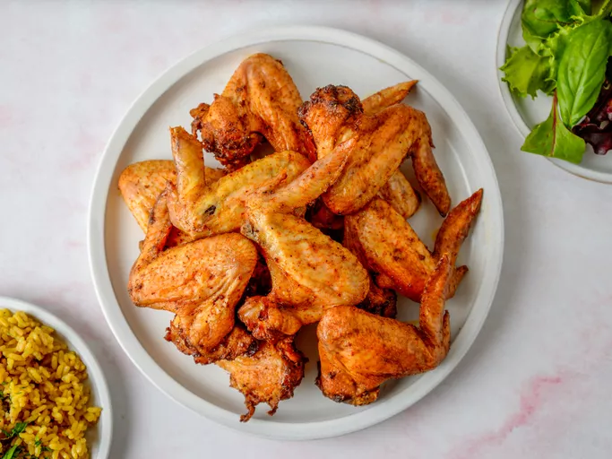

Baked Chicken Wings Recipe

These baked chicken wings are easy, crispy, and delicious!
I normally serve them with a side of rice, chicken gravy, and a vegetable or salad.
How to make Baked Chicken Wings:
No grill? No problem. Baked chicken wings come together easily with just an oven and a few ingredients.
You'll find the full step-by-step instructions below,
but here's what you can expect from this baked chicken wings recipe:
Chicken wings ingredients
These are the simple ingredients you'll need to make this baked chicken wing recipe:
- Oil:Olive oil locks in the moisture and gives the seasonings something to stick to.
- Seasonings:The baked wings are flavored with a blend of fresh garlic, chili powder, garlic powder, salt, and black pepper.
- Wings:You’ll need 10 chicken wings for this recipe, which makes about two servings.
How to Bake Chicken Wings In the Oven
Here’s a brief overview of what you can expect when you bake chicken wings at home:
- Combine the oil and seasonings in a bag and shake to blend.
- Add the chicken wings to the bag, seal and shake to coat.
- Arrange the wings on a baking sheet and bake until crisp and cooked through.